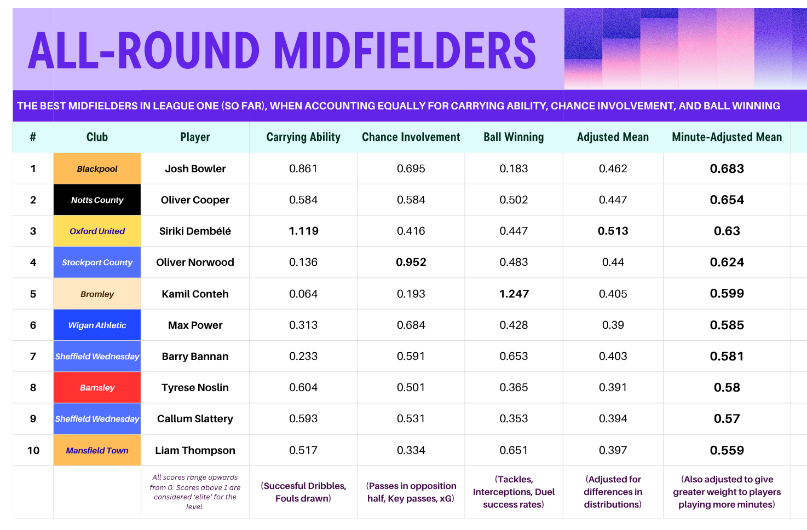

Today, I sought to find the most complete midfielder in League One, using data from the season so far. I wanted to put equal value to what I believe are the three most important aspects to the role as a midfielder. I classified these as ball winning, carrying ability, and chance involvement. These represent the three key stages of a game of football; a complete midfielder contributes at a high and frequent level in all stages. I combined season statistics to calculate player scores for each category, and combined these to rank the league’s midfielders.
To start this inquiry, I set some ground rules. 6 games into the League One season, I only wanted to consider players who had featured in at least 5 games so far, so as to only rank regular contributors for their teams. Additionally, I filtered out any attackers or defenders (or goalkeepers) to narrow the scope of my findings. Now, I had a list of 118 midfielders who fit the requirements.
To begin, I calculated my 3 base metrics. All 3 were weighted so as to range from 0-1 for most players, with exceptional players in the category exceeding 1 on occasion. Ball winning was made up of tackles, interceptions, and success rate in both types of duels. Chance involvement consisted of passes in the opposition half, key passes and xG, which tell us how well a midfielder is able to create chances, both with movement and passing. Carrying ability evaluated the number of successful dribbles a player was making, as well as how regularly they were able to draw fouls. All three calculations also factored into account minutes played. These three metrics are very revealing on their own, and all 118 players' results for all three are listed in the table below.
Now though, I wanted to examine which players exceeded in all areas. To do this, I calculated an adjusted mean, which took into account the maximum value in the league for each of the three metrics. This ensured that all three evaluations were granted equal weight in the average.

The player with the highest adjusted mean in the league was actually my very own Oxford United’s Siriki Dembélé, who scored 0.513. Often criticised by Oxford fans, Dembélé’s numbers in his opening 5 games of the season have been hugely impressive, and he finally scored a goal to show for it against Burton. Dembélé excels at carrying ability, scoring well over one in this category. However, his ball winning numbers are also hugely impressive for a player often regarded as a textbook tricky winger. Clearly, Dembélé has been playing with a point to prove this season, and I do hope the Oxford majority soon come to appreciate his performances.
However, I did want to make another adjustment to the calculation, which at the moment was perhaps being particularly generous to players like Siriki, who has played more than 100 minutes less than most other players in the top ten. The original three metrics were calculated akin to per-minute-averages, which is essential to even the playing field when using countable statistics like passes and tackles. However, I wanted to give more value to players who were more consistently posting good numbers with larger bodies of evidence. My final adjustment was to multiply each player's average by (0.5 + the fraction of 540 minutes which they had played), where 540 minutes is the maximum played after 6 games of the season. This means players who played over half of this number received a positive boost relative to how much they played, and the reverse for those who played less than half of this number.
Dembélé is unfortunate here, as Oxford have only played five games this season, but the readjustment caused him to fall to a still highly impressive 3rd. Above him now are Blackpool’s Josh Bowler, and Notts County’s Ollie Cooper. Bowler is notable for very strong performance in both carrying ability and chance involvement; an exceptional attacking midfielder, who has had 2.37 xG already this season. Cooper is the standout all-rounder midfielder in the division, the only player to record over 0.5 in all three categories. Another especially notable player is Bromley’s Kamil Conteh, whose incredible ball winning numbers drag him to fifth in the rankings.
My full table is detailed below.
| # | Team | Name | Succ. dribbles | Tackles | Interceptions | Passes in opposition half (acc.) | Key passes | Expected goals (xG) | Minutes played | Was fouled | Ground duels won % | Aerial duels won % | On the Ball | Chance Involvement | Ball Winning | AVG | Max-adjusted AVG | Min+max adjusted avg | Rounded |
|---|---|---|---|---|---|---|---|---|---|---|---|---|---|---|---|---|---|---|---|
| 57 | Blackpool | Josh Bowler | 16 | 6 | 4 | 88 | 10 | 2.37 | 529 | 11 | 44 | 16.67 | 0.8612949 | 0.695274102 | 0.18346608 | 0.580012 | 0.46165 | 0.68307 | 0.68 |
| 1 | Notts County | Oliver Cooper | 4 | 25 | 5 | 57 | 8 | 2.32 | 520 | 14 | 59.72 | 6.67 | 0.5841346 | 0.583846154 | 0.5019084 | 0.55663 | 0.446731 | 0.653551 | 0.65 |
| 7 | Oxford United | Siriki Dembélé | 12 | 16 | 5 | 52 | 4 | 0.88 | 392 | 14 | 54.55 | 25 | 1.1192602 | 0.416326531 | 0.4467528 | 0.66078 | 0.513499 | 0.629512 | 0.63 |
| 68 | Stockport County | Oliver Norwood | 1 | 5 | 7 | 200 | 17 | 0.47 | 496 | 3 | 45 | 72.73 | 0.1360887 | 0.952016129 | 0.48316392 | 0.523756 | 0.439951 | 0.624079 | 0.62 |
| 4 | Bromley | Kamil Conteh | 0 | 22 | 13 | 57 | 2 | 0.16 | 528 | 2 | 63.16 | 57.14 | 0.0639205 | 0.193181818 | 1.2472704 | 0.501458 | 0.40525 | 0.59887 | 0.6 |
| 56 | Wigan Athletic | Max Power | 2 | 6 | 4 | 159 | 14 | 0.18 | 540 | 8 | 66.67 | 75 | 0.3125 | 0.684444444 | 0.42841008 | 0.475118 | 0.390254 | 0.585381 | 0.59 |
| 49 | Sheffield Wednesday | Barry Bannan | 3 | 7 | 9 | 91 | 8 | 1.58 | 508 | 4 | 60.87 | 60 | 0.2325295 | 0.590551181 | 0.652698 | 0.491926 | 0.403327 | 0.58109 | 0.58 |
| 17 | Barnsley | Tyrese Noslin | 10 | 12 | 5 | 80 | 9 | 1.03 | 531 | 9 | 45.59 | 31.25 | 0.6038136 | 0.500564972 | 0.36514368 | 0.489841 | 0.390685 | 0.579516 | 0.58 |
| 11 | Sheffield Wednesday | Callum Slattery | 3 | 14 | 2 | 87 | 11 | 0.59 | 512 | 15 | 45.07 | 45.83 | 0.5932617 | 0.530859375 | 0.3534192 | 0.492513 | 0.393817 | 0.570305 | 0.57 |
| 29 | Mansfield Town | Liam Thompson | 5 | 10 | 9 | 87 | 2 | 0.59 | 490 | 10 | 53.06 | 54.55 | 0.5165816 | 0.334285714 | 0.65082528 | 0.500564 | 0.397284 | 0.55914 | 0.56 |
| 50 | Burton Albion | Charlie Webster | 4 | 7 | 6 | 82 | 11 | 0.91 | 522 | 14 | 39.68 | 30 | 0.5818966 | 0.545977011 | 0.28596672 | 0.47128 | 0.37743 | 0.553565 | 0.55 |
| 2 | Leyton Orient | Idris El Mizouni | 6 | 24 | 6 | 107 | 2 | 0.46 | 530 | 4 | 65.38 | 29.41 | 0.3183962 | 0.339622642 | 0.73708704 | 0.465035 | 0.373611 | 0.553498 | 0.55 |
| 5 | Blackpool | Karoy Anderson | 4 | 21 | 4 | 70 | 4 | 1.21 | 540 | 9 | 54.84 | 37.21 | 0.40625 | 0.378888889 | 0.5766012 | 0.453913 | 0.363577 | 0.545366 | 0.55 |
| 9 | Bradford City | Josh Neufville | 7 | 15 | 7 | 81 | 6 | 0.18 | 540 | 2 | 48.98 | 66.67 | 0.28125 | 0.333333333 | 0.7244316 | 0.446338 | 0.359345 | 0.539018 | 0.54 |
| 3 | Stevenage | Daniel Phillips | 4 | 23 | 7 | 77 | 2 | 520 | 6 | 53.23 | 50 | 0.3245192 | 0.223846154 | 0.82501416 | 0.457793 | 0.364834 | 0.533738 | 0.53 | |
| 48 | Luton Town | Liam Walsh | 3 | 7 | 4 | 145 | 8 | 0.02 | 511 | 12 | 57.89 | 50 | 0.4953523 | 0.53072407 | 0.3495636 | 0.458547 | 0.368894 | 0.53353 | 0.53 |
| 22 | Huddersfield Town | Derensili Sanches Fernandes | 6 | 10 | 5 | 80 | 16 | 0.97 | 507 | 6 | 40 | 16.67 | 0.3994083 | 0.682840237 | 0.2448144 | 0.442354 | 0.361893 | 0.520724 | 0.52 |
| 45 | Plymouth Argyle | Ronan Curtis | 5 | 8 | 3 | 56 | 5 | 1.04 | 449 | 14 | 48.15 | 53.33 | 0.7140869 | 0.422271715 | 0.30687552 | 0.481078 | 0.379142 | 0.504821 | 0.5 |
| 41 | Blackpool | Albie Morgan | 1 | 8 | 6 | 79 | 8 | 0.26 | 432 | 8 | 60.71 | 76.92 | 0.3515625 | 0.477777778 | 0.5945616 | 0.474634 | 0.383897 | 0.499066 | 0.5 |
| 13 | Bradford City | Ibou Touray | 3 | 12 | 4 | 115 | 5 | 0.14 | 538 | 7 | 48.89 | 76.47 | 0.3136617 | 0.383643123 | 0.5415552 | 0.412953 | 0.333041 | 0.498329 | 0.5 |
| 73 | Wycombe Wanderers | Ewan Henderson | 4 | 5 | 9 | 106 | 8 | 0.41 | 540 | 7 | 42.11 | 40.91 | 0.34375 | 0.458888889 | 0.41244336 | 0.405027 | 0.327813 | 0.49172 | 0.49 |
| 70 | Stockport County | Ben Osborn | 3 | 5 | 4 | 113 | 17 | 422 | 4 | 52.17 | 50 | 0.2799171 | 0.804739336 | 0.28689336 | 0.457183 | 0.379582 | 0.486427 | 0.49 | |
| 20 | Leicester City | Sammy Braybrooke | 4 | 11 | 1 | 138 | 13 | 0.44 | 521 | 5 | 55.56 | 27.27 | 0.2915067 | 0.667946257 | 0.23258664 | 0.397347 | 0.327994 | 0.48045 | 0.48 |
| 35 | Stevenage | Louis Thompson | 4 | 9 | 7 | 60 | 2 | 401 | 10 | 62.16 | 66.67 | 0.5891521 | 0.239401496 | 0.64002744 | 0.489527 | 0.384403 | 0.477656 | 0.48 | |
| 104 | Luton Town | Gideon Kodua | 6 | 2 | 2 | 43 | 7 | 1.55 | 265 | 7 | 41.67 | 16.67 | 0.8278302 | 0.862641509 | 0.07560864 | 0.588693 | 0.473487 | 0.469103 | 0.47 |
| 15 | Leicester City | Jayden Joseph | 4 | 12 | 2 | 109 | 1 | 0.47 | 441 | 11 | 62.79 | 44.44 | 0.5739796 | 0.387755102 | 0.37058688 | 0.444107 | 0.351968 | 0.463425 | 0.46 |
| 31 | Huddersfield Town | Marcus Harness | 8 | 9 | 3 | 67 | 11 | 0.75 | 511 | 4 | 38.24 | 44.44 | 0.3962818 | 0.5037182 | 0.2678832 | 0.389294 | 0.315052 | 0.455659 | 0.46 |
| 8 | Burton Albion | Sulyman Krubally | 3 | 16 | 3 | 51 | 5 | 394 | 10 | 58 | 52.94 | 0.5567893 | 0.307614213 | 0.52718688 | 0.463863 | 0.366257 | 0.450361 | 0.45 | |
| 72 | Leicester City | Louis Page | 1 | 5 | 4 | 111 | 10 | 0.24 | 373 | 8 | 41.18 | 50 | 0.4071716 | 0.717426273 | 0.25603344 | 0.46021 | 0.37687 | 0.448755 | 0.45 |
| 101 | Reading | Kyreece Lisbie | 5 | 2 | 0 | 32 | 11 | 2.33 | 398 | 7 | 38.89 | 22.22 | 0.508794 | 0.779396985 | 0.02639952 | 0.438197 | 0.358332 | 0.443271 | 0.44 |
| 59 | Stockport County | Lewis Bate | 4 | 6 | 3 | 143 | 10 | 0.16 | 485 | 3 | 56.52 | 50 | 0.2435567 | 0.621030928 | 0.27609984 | 0.380229 | 0.314257 | 0.439378 | 0.44 |
| 76 | Wigan Athletic | Reggie Walsh | 1 | 5 | 3 | 75 | 5 | 1 | 363 | 12 | 45 | 45.45 | 0.6043388 | 0.578512397 | 0.2149092 | 0.46592 | 0.373397 | 0.437704 | 0.44 |
| 18 | Burton Albion | Kgagelo Chauke | 2 | 11 | 6 | 90 | 4 | 0.32 | 540 | 4 | 50 | 62.5 | 0.1875 | 0.324444444 | 0.5589 | 0.356948 | 0.289675 | 0.434512 | 0.43 |
| 23 | Doncaster Rovers | Robbie Gotts | 1 | 10 | 6 | 105 | 4 | 0.21 | 504 | 11 | 51.16 | 25 | 0.4017857 | 0.370238095 | 0.36191232 | 0.377979 | 0.302591 | 0.433714 | 0.43 |
| 10 | Notts County | Darius Lipsiuc | 1 | 15 | 8 | 45 | 2 | 0.39 | 437 | 9 | 49.02 | 44.83 | 0.3861556 | 0.232036613 | 0.6284196 | 0.415537 | 0.329698 | 0.431661 | 0.43 |
| 38 | Reading | Andy Rinomhota | 4 | 9 | 4 | 56 | 6 | 0.06 | 394 | 10 | 58.97 | 37.5 | 0.5996193 | 0.362436548 | 0.35423784 | 0.438765 | 0.346461 | 0.426019 | 0.43 |
| 53 | Wycombe Wanderers | Caolan Boyd-Munce | 3 | 7 | 3 | 71 | 9 | 0.27 | 384 | 6 | 66.67 | 60 | 0.3955078 | 0.5453125 | 0.35568936 | 0.43217 | 0.350462 | 0.424448 | 0.42 |
| 36 | Notts County | Hindolo Mustapha | 9 | 9 | 1 | 38 | 6 | 0.5 | 283 | 5 | 46.94 | 45.45 | 0.8348057 | 0.52155477 | 0.21951864 | 0.525293 | 0.414163 | 0.424134 | 0.42 |
| 78 | Luton Town | Kasey Palmer | 8 | 5 | 2 | 55 | 5 | 0.87 | 397 | 9 | 47.83 | 20 | 0.7226071 | 0.448866499 | 0.13186152 | 0.434445 | 0.342202 | 0.422683 | 0.42 |
| 14 | Burton Albion | Jack Armer | 1 | 12 | 6 | 47 | 6 | 0.13 | 494 | 8 | 46.67 | 56.67 | 0.3074393 | 0.275708502 | 0.53571456 | 0.372954 | 0.298484 | 0.422299 | 0.42 |
| 25 | Wycombe Wanderers | Fred Onyedinma | 2 | 10 | 3 | 51 | 5 | 1.65 | 520 | 8 | 37.25 | 55.81 | 0.3245192 | 0.423461538 | 0.32161536 | 0.356532 | 0.288521 | 0.422096 | 0.42 |
| 46 | Cambridge United | Dominic Ball | 2 | 8 | 6 | 88 | 2 | 0.56 | 540 | 5 | 51.72 | 68.42 | 0.21875 | 0.302222222 | 0.5190048 | 0.346659 | 0.280144 | 0.420217 | 0.42 |
| 44 | Doncaster Rovers | Owen Bailey | 2 | 8 | 1 | 63 | 5 | 1.83 | 520 | 9 | 54.29 | 54 | 0.3569712 | 0.471923077 | 0.2339064 | 0.354267 | 0.287122 | 0.420048 | 0.42 |
| 69 | Wigan Athletic | Jensen Weir | 1 | 5 | 4 | 114 | 4 | 0.53 | 529 | 9 | 57.69 | 57.14 | 0.3189981 | 0.409451796 | 0.32244264 | 0.350298 | 0.283311 | 0.419195 | 0.42 |
| 40 | Burton Albion | Kyran Lofthouse | 3 | 9 | 6 | 51 | 7 | 0.22 | 539 | 6 | 47.37 | 50 | 0.2817718 | 0.293877551 | 0.44167032 | 0.339107 | 0.272396 | 0.40809 | 0.41 |
| 108 | Barnsley | Reyes Cleary | 12 | 1 | 1 | 32 | 9 | 0.98 | 379 | 4 | 35.42 | 0 | 0.7124011 | 0.541424802 | 0.02295216 | 0.425593 | 0.337606 | 0.405752 | 0.41 |
| 102 | Leicester City | Harry Howell | 7 | 2 | 0 | 27 | 1 | 0.85 | 165 | 6 | 53.57 | 33.33 | 1.3295455 | 0.578181818 | 0.0375408 | 0.648423 | 0.502575 | 0.404852 | 0.4 |
| 58 | Plymouth Argyle | Harvey White | 2 | 6 | 4 | 108 | 6 | 0.39 | 539 | 4 | 54.55 | 66.67 | 0.1878479 | 0.417439703 | 0.36656928 | 0.323952 | 0.265483 | 0.397732 | 0.4 |
| 60 | Barnsley | Cameron McGeehan | 1 | 6 | 2 | 63 | 4 | 2.86 | 525 | 5 | 42.31 | 58.06 | 0.1928571 | 0.562285714 | 0.2167992 | 0.323981 | 0.268924 | 0.395916 | 0.4 |
| 90 | Leicester City | Tom Watson | 5 | 4 | 0 | 44 | 6 | 0.72 | 194 | 3 | 54.55 | 100 | 0.6958763 | 0.865979381 | 0.1335312 | 0.565129 | 0.457794 | 0.393364 | 0.39 |
| 94 | Barnsley | Patrick Kelly | 3 | 4 | 1 | 82 | 17 | 0.59 | 539 | 4 | 26.83 | 40 | 0.2191558 | 0.626716141 | 0.08661168 | 0.310828 | 0.25933 | 0.388515 | 0.39 |
| 27 | AFC Wimbledon | Alistair Smith | 3 | 10 | 5 | 83 | 4 | 0.08 | 529 | 5 | 50 | 50 | 0.2551985 | 0.288090737 | 0.432 | 0.325096 | 0.26165 | 0.387146 | 0.39 |
| 66 | Bromley | Mitch Pinnock | 3 | 6 | 5 | 57 | 11 | 0.56 | 450 | 6 | 41.67 | 18.75 | 0.3375 | 0.52 | 0.20881152 | 0.355437 | 0.289694 | 0.386258 | 0.39 |
| 24 | Huddersfield Town | Ryan Ledson | 0 | 10 | 6 | 65 | 7 | 0.37 | 485 | 1 | 51.35 | 71.43 | 0.0347938 | 0.379793814 | 0.58345056 | 0.332679 | 0.275177 | 0.384738 | 0.38 |
| 86 | Oxford United | Cameron Brannagan | 2 | 4 | 10 | 108 | 4 | 1.15 | 441 | 4 | 52.63 | 0 | 0.2295918 | 0.559183673 | 0.27283392 | 0.35387 | 0.291944 | 0.384392 | 0.38 |
| 34 | Stevenage | Jordan Roberts | 3 | 9 | 3 | 24 | 2 | 0.33 | 323 | 11 | 69.7 | 50 | 0.7314241 | 0.224767802 | 0.387828 | 0.448007 | 0.347395 | 0.381491 | 0.38 |
| 52 | Luton Town | Jake Richards | 4 | 7 | 3 | 54 | 6 | 0.59 | 417 | 8 | 61.29 | 20 | 0.4856115 | 0.41294964 | 0.22826232 | 0.375608 | 0.299752 | 0.381351 | 0.38 |
| 83 | Stevenage | Daniel Kemp | 3 | 4 | 0 | 66 | 12 | 0.72 | 509 | 9 | 37.21 | 14.29 | 0.3978389 | 0.523379175 | 0.044496 | 0.321905 | 0.261466 | 0.377189 | 0.38 |
| 97 | Notts County | Callum Roberts | 1 | 3 | 0 | 41 | 9 | 0.46 | 331 | 12 | 50 | 33.33 | 0.6627644 | 0.558308157 | 0.05399784 | 0.425023 | 0.338734 | 0.376999 | 0.38 |
| 12 | Mansfield Town | Louis Reed | 4 | 12 | 7 | 97 | 4 | 0.49 | 456 | 1 | 45.95 | 25 | 0.1850329 | 0.425 | 0.3984552 | 0.336163 | 0.275524 | 0.370426 | 0.37 |
| 42 | Milton Keynes Dons | Daniel Barlaser | 3 | 8 | 4 | 70 | 10 | 0.09 | 353 | 3 | 60.87 | 20 | 0.2868272 | 0.593201133 | 0.27948672 | 0.386505 | 0.317587 | 0.366401 | 0.37 |
| 30 | Stockport County | Ryan Glover | 2 | 9 | 2 | 78 | 4 | 1.55 | 407 | 2 | 61.9 | 46.67 | 0.1658477 | 0.576412776 | 0.30486456 | 0.349042 | 0.29 | 0.363574 | 0.36 |
| 63 | Leyton Orient | Isaac Hayden | 2 | 6 | 7 | 73 | 1 | 0.34 | 468 | 3 | 55 | 72.22 | 0.1802885 | 0.256410256 | 0.5495904 | 0.328763 | 0.265587 | 0.362968 | 0.36 |
| 85 | Mansfield Town | Regan Hendry | 3 | 4 | 1 | 62 | 7 | 0.66 | 228 | 3 | 55.56 | 33.33 | 0.4440789 | 0.868421053 | 0.11520144 | 0.4759 | 0.392264 | 0.361755 | 0.36 |
| 19 | AFC Wimbledon | James Tilley | 5 | 11 | 1 | 61 | 3 | 0.27 | 365 | 6 | 55 | 53.33 | 0.5085616 | 0.343561644 | 0.30419064 | 0.385438 | 0.305397 | 0.359124 | 0.36 |
| 96 | Peterborough United | Brandon Khela | 5 | 4 | 4 | 88 | 3 | 0.51 | 365 | 5 | 45.16 | 33.33 | 0.4623288 | 0.471780822 | 0.20344608 | 0.379185 | 0.304607 | 0.358195 | 0.36 |
| 74 | Notts County | Nick Tsaroulla | 2 | 5 | 2 | 66 | 8 | 0.21 | 506 | 9 | 57.69 | 40 | 0.3668478 | 0.371146245 | 0.18990936 | 0.309301 | 0.248376 | 0.356926 | 0.36 |
| 115 | Leicester City | William Alves | 11 | 0 | 0 | 75 | 7 | 0.1 | 363 | 3 | 56 | 16.67 | 0.6508264 | 0.495867769 | 0 | 0.382231 | 0.303183 | 0.355398 | 0.36 |
| 61 | Peterborough United | Benjamin Woods | 2 | 6 | 3 | 76 | 5 | 1.17 | 292 | 3 | 44 | 25 | 0.2889555 | 0.758219178 | 0.178848 | 0.408674 | 0.33934 | 0.353165 | 0.35 |
| 88 | Stevenage | Saxon Earley | 2 | 4 | 0 | 13 | 3 | 0.02 | 111 | 7 | 60 | 62.5 | 1.3682432 | 0.475675676 | 0.10584 | 0.64992 | 0.500358 | 0.35303 | 0.35 |
| 6 | Blackpool | Finley Munroe | 4 | 17 | 1 | 24 | 4 | 0.21 | 265 | 5 | 70.27 | 37.5 | 0.5731132 | 0.337358491 | 0.44228808 | 0.45092 | 0.35622 | 0.352922 | 0.35 |
| 43 | Reading | Lewis Wing | 0 | 8 | 4 | 89 | 10 | 0.44 | 450 | 2 | 43.48 | 42.86 | 0.075 | 0.562666667 | 0.29839104 | 0.312019 | 0.262128 | 0.349504 | 0.35 |
| 37 | Peterborough United | Liam Kelly | 3 | 9 | 4 | 123 | 3 | 0.14 | 422 | 2 | 50 | 40 | 0.1999408 | 0.454976303 | 0.33048 | 0.328466 | 0.269732 | 0.345657 | 0.35 |
| 32 | AFC Wimbledon | Myles Hippolyte | 0 | 9 | 2 | 70 | 5 | 1.3 | 488 | 4 | 44 | 52.63 | 0.1383197 | 0.454918033 | 0.27133704 | 0.288192 | 0.238897 | 0.335341 | 0.34 |
| 21 | Peterborough United | Ethan Williams | 2 | 11 | 2 | 39 | 7 | 1.14 | 384 | 4 | 44.74 | 20 | 0.2636719 | 0.51875 | 0.2097576 | 0.330726 | 0.271596 | 0.328933 | 0.33 |
| 26 | Milton Keynes Dons | Ryan Wintle | 1 | 10 | 3 | 78 | 6 | 0.7 | 540 | 2 | 54.17 | 33.33 | 0.09375 | 0.384444444 | 0.3024 | 0.260198 | 0.215786 | 0.323678 | 0.32 |
| 87 | Barnsley | Luca Connell | 1 | 4 | 2 | 80 | 5 | 0.3 | 268 | 5 | 47.37 | 42.86 | 0.3777985 | 0.649253731 | 0.15591744 | 0.394323 | 0.323074 | 0.321878 | 0.32 |
| 103 | Oxford United | Tyler Goodrham | 3 | 2 | 0 | 49 | 7 | 0.19 | 200 | 3 | 42.11 | 50 | 0.50625 | 0.771 | 0.03979152 | 0.439014 | 0.358843 | 0.312326 | 0.31 |
| 93 | Milton Keynes Dons | Ben Wiles | 1 | 4 | 8 | 31 | 4 | 0.54 | 313 | 4 | 52.94 | 45.45 | 0.2695687 | 0.37571885 | 0.4250448 | 0.356777 | 0.288851 | 0.311852 | 0.31 |
| 117 | Bradford City | Nick Powell | 0 | 0 | 0 | 16 | 1 | 1.04 | 122 | 6 | 40 | 40.74 | 0.829918 | 0.767213115 | 0 | 0.532377 | 0.425956 | 0.309213 | 0.31 |
| 81 | Wigan Athletic | Jon Mellish | 1 | 5 | 3 | 74 | 5 | 0.64 | 405 | 2 | 53.85 | 75 | 0.125 | 0.462222222 | 0.3061476 | 0.29779 | 0.247086 | 0.308857 | 0.31 |
| 67 | Barnsley | Jonathan Bland | 0 | 6 | 7 | 55 | 6 | 0.26 | 338 | 4 | 37.04 | 40 | 0.1997041 | 0.45443787 | 0.3328128 | 0.328985 | 0.270141 | 0.304159 | 0.3 |
| 62 | Leyton Orient | Armando Dobra | 2 | 6 | 0 | 24 | 2 | 0.84 | 207 | 7 | 55.56 | 0 | 0.7336957 | 0.498550725 | 0.07200576 | 0.434751 | 0.343398 | 0.303335 | 0.3 |
| 109 | Wycombe Wanderers | Aaron Morley | 1 | 1 | 3 | 50 | 10 | 0.13 | 242 | 1 | 42.86 | 100 | 0.1394628 | 0.776033058 | 0.21600432 | 0.377167 | 0.318046 | 0.301555 | 0.3 |
| 105 | Wigan Athletic | Fraser Murray | 4 | 2 | 4 | 58 | 6 | 0.79 | 399 | 2 | 61.54 | 10 | 0.2537594 | 0.473684211 | 0.1545264 | 0.29399 | 0.241276 | 0.298915 | 0.3 |
| 84 | Plymouth Argyle | Caleb Watts | 0 | 4 | 0 | 15 | 2 | 0.9 | 84 | 2 | 60 | 0 | 0.4017857 | 1.142857143 | 0.05184 | 0.532161 | 0.445071 | 0.291769 | 0.29 |
| 107 | Leicester City | Bobby De Cordova-Reid | 2 | 2 | 1 | 64 | 4 | 1.18 | 343 | 4 | 47.06 | 33.33 | 0.2951895 | 0.570262391 | 0.06945696 | 0.311636 | 0.256803 | 0.291519 | 0.29 |
| 111 | Leicester City | Wes Burns | 2 | 1 | 3 | 68 | 2 | 0.73 | 286 | 5 | 34.78 | 38.46 | 0.4130245 | 0.522377622 | 0.11073888 | 0.348714 | 0.282577 | 0.290949 | 0.29 |
| 65 | Stockport County | Jason Adigun | 4 | 6 | 1 | 29 | 0 | 0.72 | 147 | 3 | 52 | 0 | 0.8035714 | 0.530612245 | 0.089856 | 0.47468 | 0.374543 | 0.289231 | 0.29 |
| 16 | Oxford United | Jamie McDonnell | 1 | 12 | 6 | 53 | 2 | 0.44 | 367 | 2 | 43.75 | 42.86 | 0.1379428 | 0.310626703 | 0.44898624 | 0.299185 | 0.244197 | 0.288062 | 0.29 |
| 71 | Mansfield Town | Nathan Moriah-Welsh | 1 | 5 | 2 | 55 | 8 | 0.16 | 248 | 3 | 45 | 0 | 0.2721774 | 0.691935484 | 0.08748 | 0.350531 | 0.291502 | 0.279626 | 0.28 |
| 51 | Sheffield Wednesday | Billy Mitchell | 0 | 7 | 1 | 110 | 6 | 0.03 | 351 | 1 | 50 | 44.44 | 0.0480769 | 0.586324786 | 0.18359136 | 0.272664 | 0.231789 | 0.266557 | 0.27 |
| 95 | Peterborough United | Bolu Shofowoke | 3 | 4 | 0 | 46 | 8 | 0.22 | 355 | 4 | 21.57 | 14.29 | 0.3327465 | 0.463098592 | 0.03098304 | 0.275609 | 0.224415 | 0.259739 | 0.26 |
| 112 | Wycombe Wanderers | Josh Scowen | 1 | 1 | 2 | 53 | 3 | 293 | 6 | 47.06 | 76.92 | 0.403157 | 0.339931741 | 0.1338984 | 0.292329 | 0.233149 | 0.243079 | 0.24 | |
| 80 | Peterborough United | Harrison Jones | 0 | 5 | 5 | 58 | 1 | 0.39 | 317 | 3 | 47.06 | 46.15 | 0.1597003 | 0.331230284 | 0.3020004 | 0.26431 | 0.216225 | 0.235045 | 0.24 |
| 77 | AFC Wimbledon | Zack Nelson | 0 | 5 | 2 | 46 | 2 | 0.45 | 292 | 5 | 40 | 50 | 0.2889555 | 0.36369863 | 0.17496 | 0.275871 | 0.223233 | 0.232327 | 0.23 |
| 54 | Wigan Athletic | Connor Barrett | 3 | 7 | 1 | 19 | 3 | 0.83 | 252 | 1 | 40.74 | 50 | 0.2678571 | 0.430952381 | 0.17639856 | 0.291736 | 0.238093 | 0.230156 | 0.23 |
| 64 | Sheffield Wednesday | Kieran Morrison | 3 | 6 | 2 | 52 | 5 | 0.49 | 304 | 0 | 47.37 | 0 | 0.1665296 | 0.499342105 | 0.1023192 | 0.256064 | 0.213556 | 0.227003 | 0.23 |
| 33 | Plymouth Argyle | Bradley Ibrahim | 2 | 9 | 0 | 31 | 5 | 0.22 | 221 | 1 | 52.17 | 40 | 0.2290724 | 0.499547511 | 0.17917848 | 0.302599 | 0.249394 | 0.226764 | 0.23 |
| 91 | Doncaster Rovers | Isaac Hutchinson | 3 | 4 | 2 | 44 | 3 | 0.9 | 325 | 0 | 33.33 | 33.33 | 0.1557692 | 0.439384615 | 0.11518848 | 0.236781 | 0.196887 | 0.21694 | 0.22 |
| 98 | Leyton Orient | Demetri Mitchell | 0 | 3 | 1 | 50 | 5 | 0.42 | 273 | 3 | 46.15 | 0 | 0.1854396 | 0.531868132 | 0.049842 | 0.255717 | 0.213626 | 0.214812 | 0.21 |
| 47 | Bromley | Corey Whitely | 3 | 8 | 1 | 41 | 2 | 0.15 | 393 | 3 | 50 | 35.71 | 0.2576336 | 0.209160305 | 0.1851336 | 0.217309 | 0.173247 | 0.212709 | 0.21 |
| 116 | Reading | Randell Williams | 1 | 0 | 1 | 11 | 4 | 0.15 | 94 | 1 | 20 | 0 | 0.3590426 | 0.746808511 | 0.00864 | 0.371497 | 0.307599 | 0.207344 | 0.21 |
| 75 | Stevenage | Jordan Houghton | 0 | 5 | 2 | 20 | 1 | 0.02 | 105 | 3 | 61.54 | 71.43 | 0.4821429 | 0.354285714 | 0.25849368 | 0.364974 | 0.289876 | 0.201303 | 0.2 |
| 28 | Bromley | William Hondermarck | 0 | 10 | 3 | 33 | 3 | 0.04 | 320 | 1 | 52.38 | 42.86 | 0.0527344 | 0.24375 | 0.32914944 | 0.208545 | 0.171906 | 0.187823 | 0.19 |
| 113 | Mansfield Town | George Maris | 0 | 1 | 3 | 37 | 5 | 0.13 | 214 | 1 | 28.57 | 55.56 | 0.0788551 | 0.524299065 | 0.12720456 | 0.243453 | 0.206127 | 0.184751 | 0.18 |
| 92 | Stevenage | Terry Taylor | 0 | 4 | 0 | 28 | 0 | 148 | 5 | 75 | 66.67 | 0.5701014 | 0.227027027 | 0.12240288 | 0.30651 | 0.237817 | 0.184088 | 0.18 | |
| 39 | Milton Keynes Dons | Gethin Jones | 2 | 9 | 1 | 28 | 4 | 365 | 1 | 52.17 | 27.27 | 0.1386986 | 0.223561644 | 0.18874944 | 0.18367 | 0.149439 | 0.175729 | 0.18 | |
| 114 | Doncaster Rovers | Bayley McCann | 1 | 1 | 0 | 9 | 3 | 0.29 | 136 | 2 | 28.57 | 62.5 | 0.3722426 | 0.472058824 | 0.01967112 | 0.287991 | 0.233627 | 0.175653 | 0.18 |
| 79 | Doncaster Rovers | George Broadbent | 0 | 5 | 3 | 59 | 3 | 0.21 | 267 | 0 | 50 | 20 | 0 | 0.447191011 | 0.16632 | 0.204504 | 0.17488 | 0.173908 | 0.17 |
| 110 | Blackpool | Leighton Clarkson | 0 | 1 | 0 | 32 | 4 | 0.53 | 206 | 1 | 50 | 100 | 0.0819175 | 0.573786408 | 0.0324 | 0.229368 | 0.19597 | 0.172744 | 0.17 |
| 82 | Burton Albion | Will Collar | 2 | 5 | 1 | 26 | 1 | 0.16 | 228 | 2 | 42.86 | 63.64 | 0.2960526 | 0.231578947 | 0.161028 | 0.229553 | 0.182703 | 0.168493 | 0.17 |
| 55 | Bromley | John Joshua Mckiernan | 0 | 7 | 0 | 27 | 0 | 0.31 | 209 | 4 | 45.45 | 43.75 | 0.3229665 | 0.244019139 | 0.1348704 | 0.233952 | 0.185898 | 0.164898 | 0.16 |
| 89 | Reading | Charlie Savage | 0 | 4 | 0 | 20 | 1 | 72 | 1 | 71.43 | 100 | 0.234375 | 0.5 | 0.14811552 | 0.294164 | 0.242516 | 0.153593 | 0.15 | |
| 99 | AFC Wimbledon | Callum Maycock | 1 | 3 | 1 | 37 | 3 | 0.13 | 223 | 1 | 50 | 0 | 0.1513453 | 0.395515695 | 0.054 | 0.200287 | 0.166661 | 0.152156 | 0.15 |
| 100 | Notts County | Jack Evans | 0 | 3 | 3 | 40 | 0 | 0.07 | 372 | 3 | 26.09 | 71.43 | 0.1360887 | 0.140322581 | 0.18957888 | 0.15533 | 0.124747 | 0.14831 | 0.15 |
| 118 | Bradford City | Adam Phillips | 0 | 0 | 0 | 44 | 2 | 0.58 | 278 | 1 | 11.11 | 28.57 | 0.0607014 | 0.401438849 | 0 | 0.154047 | 0.131875 | 0.133828 | 0.13 |
| 106 | Cambridge United | Pelly Ruddock Mpanzu | 0 | 2 | 2 | 43 | 3 | 0.03 | 287 | 0 | 16.67 | 41.67 | 0 | 0.311498258 | 0.07560864 | 0.129036 | 0.11106 | 0.114556 | 0.11 |